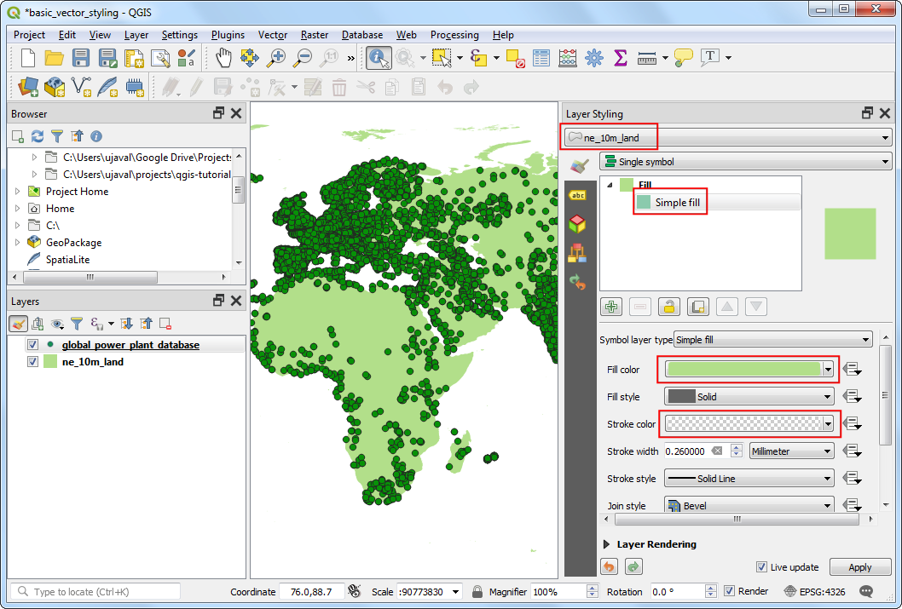
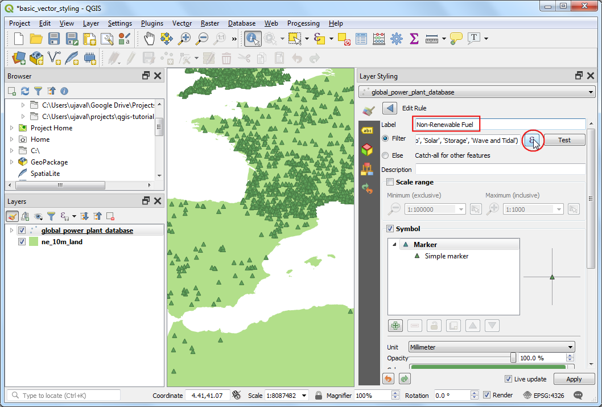
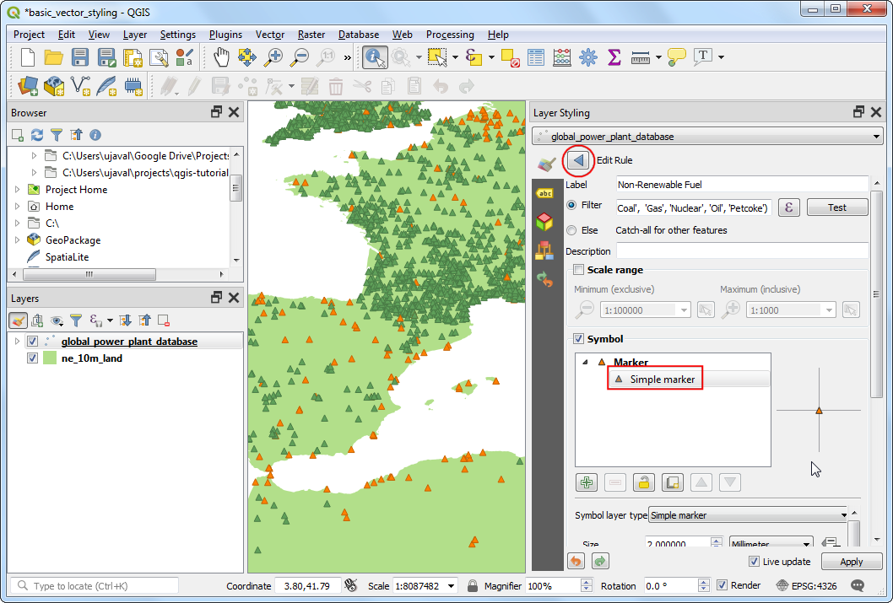

Tematizzare i dati vettoriali (QGIS3)¶
Per creare una mappa è necessario tematizzare i dati GIS cioè presentarli in una forma che sia significativa sul piano visivo. Sono disponibili un gran numero di opzioni in QGIS per ottenere diverse varietà di simbologie che hanno lo scopo di evidenziare il significato dei dati. In questa esercitazione esamineremo alcuni elementi di base della tematizzazione.
Descrizione del compito¶
We will take a CSV file containing the location of all power plants in the World and create a visualization showing distribution of renewable and non-renewable fuels used in these power plants.
Altri aspetti che avremo modo di apprendere nel corso dell’esercizio¶
Utilizzo di espressioni per raggruppare più valori di attributi in una singola categoria
Ottenere i dati necessari.¶
World Resources Institute has compiled a comprehensive, open source database of power plants around the World covering over 30000 plants. Download the The Global Power Plant Database from the WRI Open Data Portal.
Natural Earth dispone di diversi libelli vettoriali. Scarica il 10m Physical Vectors - Land con il poligoni del suolo.
Per comodità, potete scaricare direttamente una copia del dataset dal seguente link:
globalpowerplantdatabasev120.zip
Data Source [WRI] [NATURALEARTH]
Procedimento¶
Estrarre i dataset dal file compresso in una cartella. Nel QGIS Panello Browser, andate nella cartella con i dati. Aprire la cartella
ne_10m_lande selezionare il livellone_10m_land.shp. Aggiungete alla vista questo livello (doppio click o trascinate sulla vista).

You will get a new layer
ne_10m_landadded to the Layers panel. The global power plant database comes as a CSV file, so we will need to import it. Click the Open Data Source Manager button on the Data Source Toolbar. You can also use Ctrl + L keyboard shortcut.

Nella finestra Data Source Manager, modificate il tab Delimited Text. Cliccate il pulsante … vicino a File name e andate nella cartella dove avete estratto il file
globalpowerplantdatabasev120.zip. Selezionateglobal_power_plant_database.csv. QGIS dovrebbe automaticamente identificare il carattere delimitatore e quali campi/colonne abbiano le coordinate. Lasciate l’opzione Geometry CRS al valore predefinito che trovate,EPSG:4326 - WGS84. Cliccate Add e poi Close.

Un nuovo livello
global_power_plant_databasesarà aggiunto al pannello Layers e vedrete i punti che corrispondono alla posizione delle centrali elettriche. Ora possiamo procedere alla tematizzazione di tutti i livelli. Cliccate il pulsante Open the Layer Styling panel nella parte alta del pannello Layers.
Il pannello Layer Styling si apre sulla destra. Selezionate il livello
ne_10m_landper primo. Questo sarà il livello di base e terremo quindi un colore minimale per non distrarre. CliccaSimple fille sposta in basso. Seleziona il Fill color come preferite. Cliccate il menù a tendina Stroke color e selezionateTransparent Stroke. Questo imposta i confini dei poligono a trasparente. Vedrete il tema applicato subito al livello dunque potete visualizzarlo.

Selezionate il livello
global_power_plant_database. Cliccate suSimple markere spostatevi in basso. Selezionate un simbolo triangolare.

Andate sopra e selezionate un colore Fill color che preferite. Un metodo efficace è quello di usare un contorno Stroke color che contrasta con il colore di riempimento. Invece che sceglierlo manualmente, QGIS fornisce uno strumento per controllare più precisamente questa impostazione. Cliccare il pulsante Data defined override e scegliere Edit.

Inserire la seguente formula per avere una linea di contorno più scura del 30% del colore di riempimento, cliccare OK.
darker(@symbol_color, 130)
Nota
Questa formula è indipendente dal colore di riempimento che è stato scelto. Vedrete che tornerà molto utile nei prossimi passaggi dove automatizzerà il procedimento di creazione della linea di contorno con alto contrasto.
Noterete che il pulsante Data defined override vicino a Stroke color è diventato giallo - indicando che questa proprietà è controllata da una regola. Un singolo simbolo per disegnare le centrali elettriche non è però molto utile. Non fornisce informazioni utili a parte la posizione della centrale. Usiamo diverse regole per dare informazioni maggiori. Cliccare il menù a tendina Symbology e selezionate
Categorizedrenderer.

Il livello
global_power_plant_databasecontiene, nella tabella attributi, una colonna con informazioni che riguardano quale fonte energetica utilizzano. Possiamo tematizzare in modo da visualizzare un colore diverso per ogni fonte energetica. Selezionareprimary_fuelcome Column. Cliccare Classify. Vedrete tutte le categorie trovate apparire in legenda, ed i colori della mappa disegnata cambiare.

Una tematizzazione categoriazzata è utile ma questo livello contiene tante valori diversi di fonti energetiche, quindi è poco efficate visualizzare tutte. Un approccio migliore è quello di ridurre le categorie, raggruppandole alcune classi. Proviamo a creare 3 categorie - Renewable fuel, Non-renewable fuel e Altro. Selezionate la tematizzazione
Rule-based- ovvero che si basa su regole. Seleziona tutto tranne una regola tenendo premuto il il tasto Ctrl e selezionando tutte le righe. Una volta selezionata, cliccate il pulsante Remove selected rules e scaricatele.

Selezionare la regola rimasta e cliccare Edit current rule.

Inserire
Renewable fuelcome Label. Cliccare il pulsante Expression vicino Filter.

Nella finestra di dialogo Expression String Builder, inserisci la regola seguente e clicca OK. Qui stiamo usando un’espressione SQL per raggruppare più categorie in una singola categoria.
"primary_fuel" IN ('Biomass', 'Geothermal', 'Hydro', 'Solar', 'Wind', 'Storage', 'Wave and Tidal')
Nota
I tipi di fonte energetica che appartengono a rinnovabile vs. non-rinnovabile sono basati su Wikipedia.
Spostati in basso e clicca Simple marker. Scegli un colore appropriato Fill color. Una volta finito clicca il pulsante Back.

Vedrete una regola singola utilizzata al livello per la categoria Renewable fuel. Tasto destro del mouse sulla riga e scegli Copy. Tasto destro del mouse e scegli Paste.

Selezionare la regola rimasta e cliccare Edit current rule.

Inserire
Non-Renewable fuelcome Label. Cliccare il pulsante Expression vicino Filter.

Nella finestra di dialogo Expression String Builder inserisci la seguente espressione e clicca OK.
"primary_fuel" IN ('Coal', 'Gas', 'Nuclear', 'Oil', 'Petcoke')
Spostati in basso e clicca Simple marker. Scegli un colore appropriato Fill color. Una volta finito clicca il pulsante Back.

Ripeti il procedimento Copia/Incolla per aggiungere una terza regola. Selezionala e clicca Edit current rule.

Inserisci
Altrocome Label. Scegli Else - Catch all for other features invece di Filter. Questo assicura che qualsiasi categoria non inclusa nella due regole precedenti venga disegnata con lo stile scelto con questa regola. Spostati in basso e clicca Simple marker. Scegli un colore adeguato Fill color. Una volta fatto seleziona il pulsante Back .

The re-categorization is complete now. You will see a much cleaner view that shows the distribution of renewable vs. non-renewable fuel sources used by power plants and their distribution across countries. This however doesn’t give a complete picture. We can add another variable to the styling. Rather than displaying all markers with uniform size, we can show the sizes proportional to the power generation capacity of each plant. This cartography technique is called Multivariate mapping. Right-click the
Renewable fuelrule and select Change Size.

Clicca il pulsante Data defined override vicino a Size. Seleziona Edit.

Siccome la forbice di prodittività di energia è molto ampio, per limitare la corrispettiva dimensione si può usare una scala log10, con la funzione
log10. Inserisci la seguente regola e clicca OK.
log10("capacity_mw") + 1
Ripetere la stessa operazione per le altre regole.

Se soddisfatti, chiudere il pannello Layer Styling panel.

Dalla mappa vedere chiaramente delle informazioni. Ad esempio, sull’Europa ci sono più centrali che usano risorse rinnovabili, ma hanno tutte una bassa capacità di produrre energia rispetto a quelle che usano energia non-rinnovabile.

If you want to give feedback or share your experience with this tutorial, please comment below. (requires GitHub account)